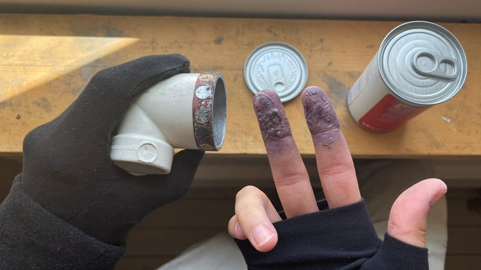
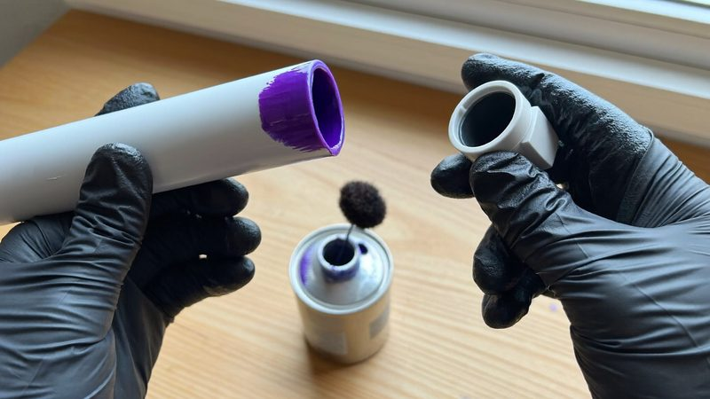
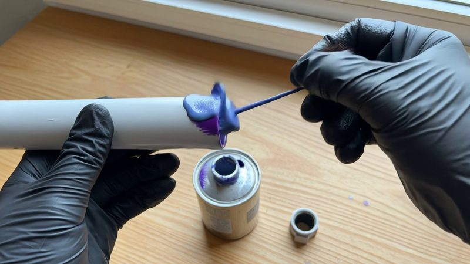
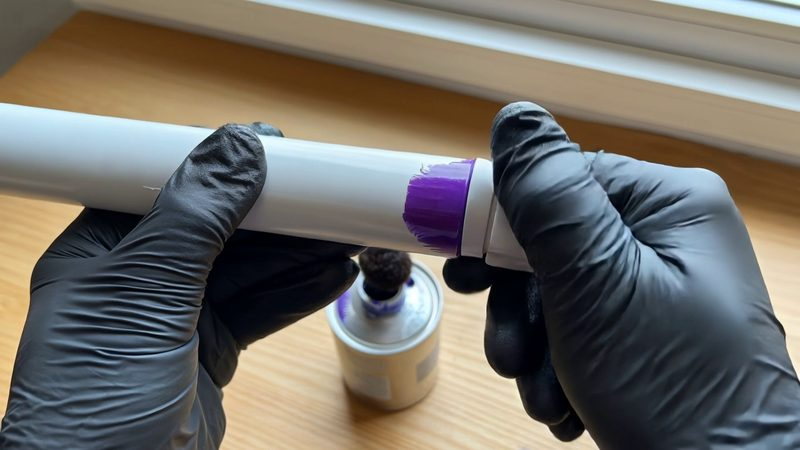
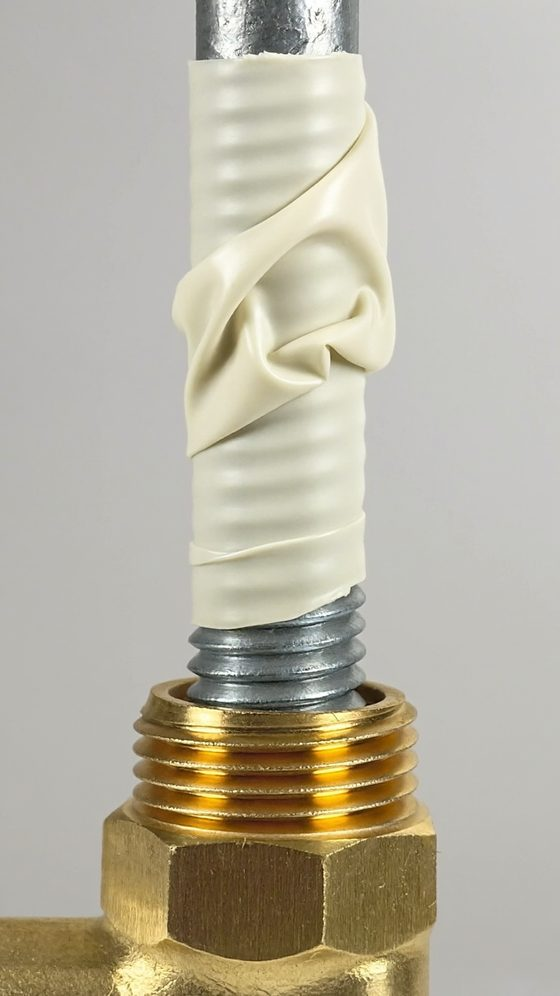
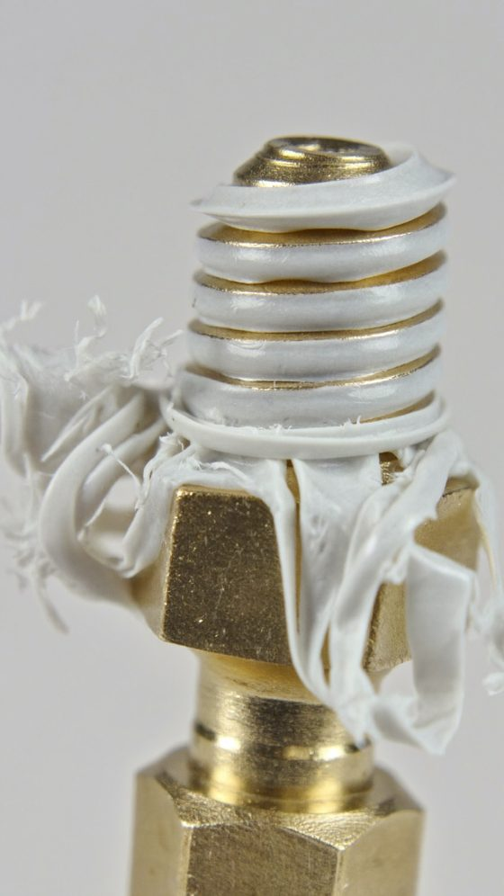
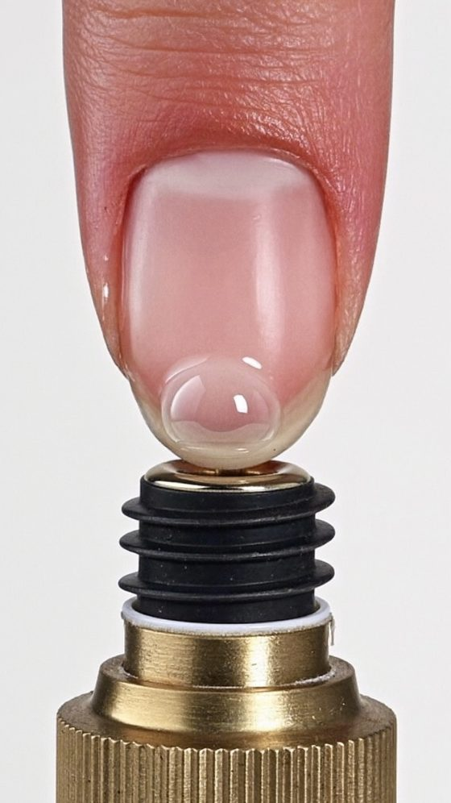
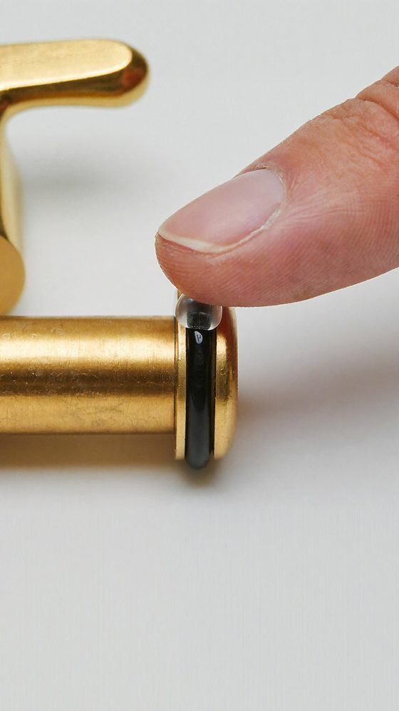
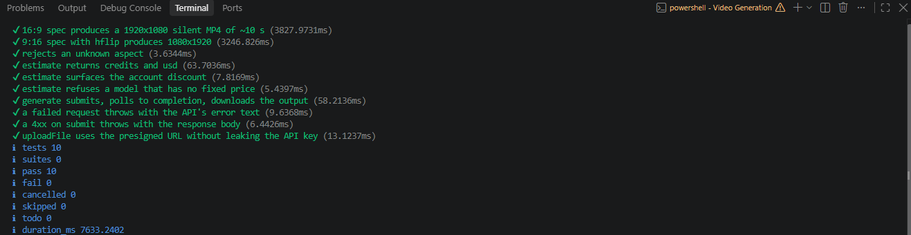
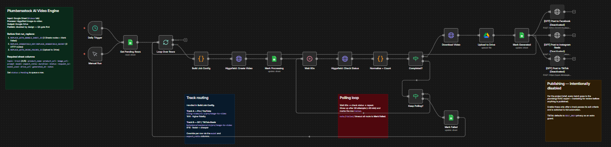

Case study: AI video for PlumbersStock
AI UGC videos with the facts checked first
PlumbersStock wanted short, UGC-style how-to videos without the one wrong detail that makes a plumber stop watching. I built a pipeline that checks each claim against manufacturer pages, has a person approve every image, and only then pays for video.
- pilot videos
- 3
- average AI cost per video
- $1.08
- working days
- 5
- Claim checkedMoen: petroleum "may react with the rubber seals"
- Still approved by a personShort trimmed nail, thin film, O-ring seated
- Clip kept$0.28, reviewed frame by frame
The three pilot videos
Each one runs problem, fix, product. The problem and fix are AI-generated; the product photo is real. They play without sound, so the on-screen text carries the message.
"You primed it. Then the phone rang."
16:9 for YouTube, 11 seconds. Featured product: Christy's Red Hot Blue Glue.
Source, Oatey: "assembled within five minutes of primer application".
"Why your tape shreds every time"
9:16 for TikTok and Reels, 10 seconds. Featured product: ProSource PTFE tape.
Source, Oatey: "Wrap the tape clockwise, following the same direction that the fitting will turn during assembly."
"Vaseline is why this faucet sticks"
9:16 for TikTok and Reels, 10 seconds. Featured product: Moen 140676 Silicone Lubricant.
Source, Moen: "Petroleum-based lubricants may react with the rubber seals".
The brief
PlumbersStock sells plumbing and HVAC parts to professionals and homeowners. The goal was brand awareness through daily short videos. The catch is the audience: plumbers spot a wrong detail straight away, and a video that gets the plumbing wrong hurts the brand it's meant to build.
-
Problem first, never a product showcase
Each video starts from a real customer problem and ends on the verified fix. The product only appears at the end.
-
Every claim needs a source
A topic stays only if a manufacturer page, code or standard backs it. I quote the exact sentence each on-screen line rests on.
-
A person approves before video spend
A still costs about half a cent and a clip costs $0.28, so nothing gets animated until someone has checked the image.
-
Nothing posts on its own
Social posting stays switched off until a batch passes review by a plumbing expert and the marketing team.
How the pipeline works
Six steps, in order. The cheap checks come first, so mistakes get caught before they cost anything.
-
Start from problems customers already have
I went through the 218 how-to guides on the PlumbersStock site. About 127 were usable and about 38 made the top tier, split into a pro track for YouTube and a DIY track for TikTok and Reels.
-
Check every claim against a primary page
One claim failed. The draft said petroleum grease swells nitrile rubber and fails within 6 to 12 months, and no source backed that. Moen says petroleum-based lubricants "may react with the rubber seals", so that's what the video now says.
-
Price every request before sending it
The generator gets an exact price from Higgsfield's free estimate call and refuses anything above $2. Pricing 20 video models this way led to Kling 3.0 Pro at $0.28 per 5-second clip on the client's discounted rate, against about $5.70 for Seedance 2.5, the model first planned for the DIY track.
Node.js, Higgsfield API, Kling 3.0 Pro
-
Generate stills and approve them by eye
76 stills in 19 batches became 6 approved images. Most fixes came from naming the exact detail the model got wrong.
Soul V2
-
Animate, then judge frame by frame
It took 10 clips to fill 6 segments, and 4 of the 6 first tries were usable. I review each clip as a sheet of frames, especially the last second, where AI video tends to fall apart.
Kling 3.0 Pro, ffmpeg
-
Build each video from a short recipe
A small file lists a video's segments, timing and on-screen text, and one command builds the finished MP4 at the right size. That's what lets this grow past three videos without manual editing.
Claude Code, Node.js, ffmpeg
What the review caught
First tries usually had a detail a plumber would catch. These are real rejects next to what made it into the final videos.
-

Rejected 
Kept A soda can instead of primer
The first batch had a soda can on the bench, mismatched gloves and primer on bare fingers. Describing the can, the dauber and matching gloves fixed it.
-

Rejected 
Kept A dauber that became a brush
In this clip the applicator changed shape and the cement went on as a blob. The kept clip is a clean join, but it shows no cement, which is the pilot's main flaw.
-

Rejected 
Kept Tape on a smooth rod
The model wrapped tape along a smooth rod and left the threads bare, which is not where tape goes. Asking for tape on the threads only fixed it.
-

Rejected 
Kept A manicure dripping gel
Silicone grease came out as a glob on a manicured nail. Asking for a short trimmed nail and a thin film fixed it, and the O-ring stayed in its seat.
Results and limits
These are pilot videos for client review, not published ads, so there are no reach or engagement numbers yet. Here is what the pilot did prove.
What it delivered
- 3 finished videos: one 16:9 and two 9:16.
- $3.23 total AI cost, failed tries included: 19 still batches and 10 clips.
- 1 unsupported claim caught and rewritten before anything was generated.
- A generator and editor with 10 of 10 automated tests passing.
- A prompt log of every try, with what went wrong and what fixed it.
What the model couldn't do
- Show the cement step. In 3 tries it never did, so the glue video shows the join without blue cement. A plumber will spot that.
- Show a full tape wrap. The best of 3 tries shows one clockwise stroke, not full wraps.
- Hold the shape of small tools. The dauber kept turning into a brush or a disc.
It did hold the purple primer, the blue tape spool, a thin clear grease film and the seated O-ring, with no extra fingers in any clip.
That's the job of a pilot: it shows which shots AI can carry and which to film, before anyone pays for 60 videos.
Under the hood


Want AI output you can trust?
I build pipelines with the review steps built in, so mistakes get caught before they cost you. Book a free 30-minute call, or send me an email.
- raffymcfee@gmail.com
- Location
- Pampanga, Philippines